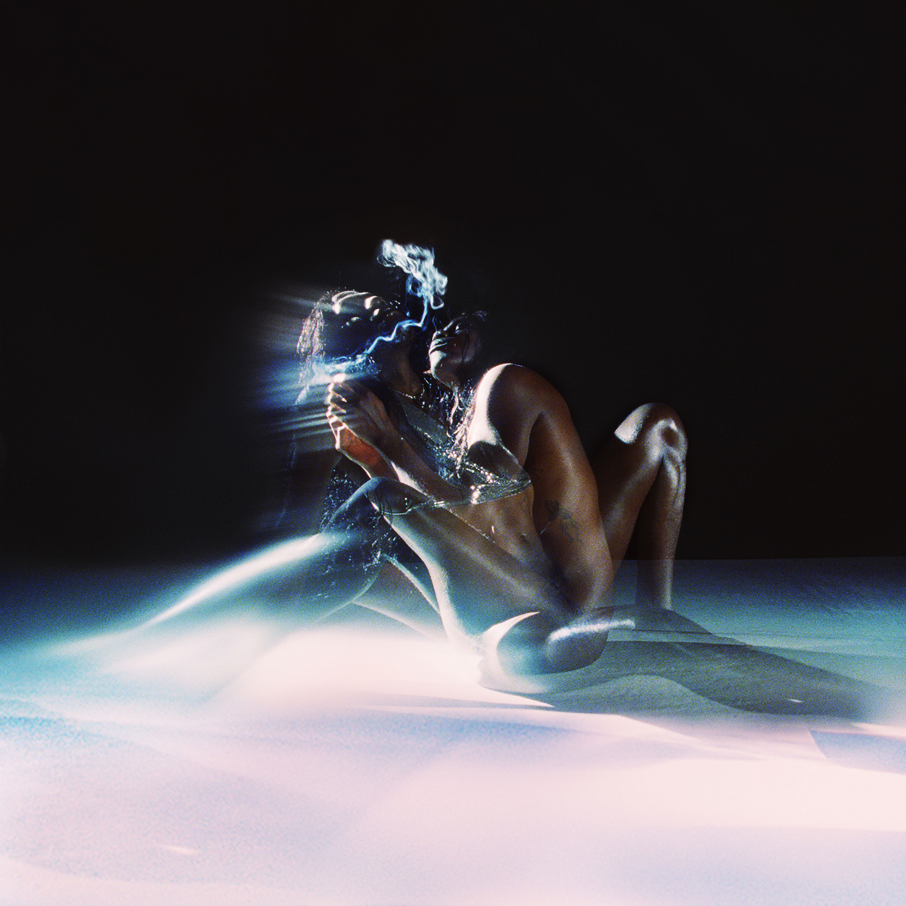
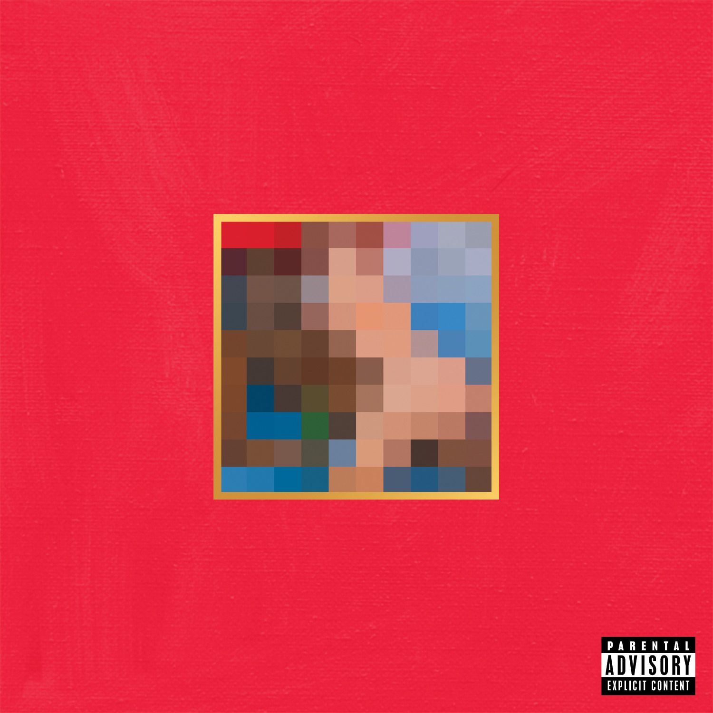

My Five All-Time Favorite Albums: A Personal Journey Through Music
Music is an integral part of life, serving as a companion, a guide, and a reflection of our emotions and experiences. Among the countless albums I have encountered, five stand out as masterpieces that have deeply resonated with me: Rodeo by Travis Scott, To Pimp a Butterfly by Kendrick Lamar, Heaven to a Tortured Mind by Yves Tumor, My Beautiful Dark Twisted Fantasy by Kanye West, and Kids See Ghosts by Kids See Ghosts. Each of these albums offers a distinct sonic universe, a compelling narrative, and an enduring personal connection.

Rodeo by Travis Scott
Travis Scott's Rodeo is a groundbreaking fusion of hip-hop and trap, marked by lush production, introspective lyrics, and a cinematic atmosphere. What makes this album special is its ability to transport listeners into Scott’s world of ambition and hedonism, capturing the chaos and euphoria of his rise to stardom. Songs like "Antidote" and "90210" are anthems that encapsulate the struggle of chasing dreams while grappling with inner demons. The standout track, "Oh My Dis Side," seamlessly blends mellow introspection with hard-hitting beats, showcasing Scott’s mastery of mood shifts. This album isn't just music—it's an immersive experience, making it my personal favorite.

To Pimp a Butterfly by Kendrick Lamar
Kendrick Lamar’s To Pimp a Butterfly is a modern classic, intertwining jazz, funk, and hip-hop into a socially conscious and deeply personal narrative. While I consider Rodeo my favorite, I hold immense respect for the genius of this album. It’s an exploration of identity, systemic racism, and self-worth, with tracks like "Alright" and "King Kunta" becoming anthems of resilience and empowerment. My favorite moment is "u," where Lamar confronts his insecurities with raw vulnerability, offering a powerful glimpse into his psyche. To Pimp a Butterfly is not just an album; it’s a profound artistic statement that has redefined the boundaries of hip-hop.

Heaven to a Tortured Mind by Yves Tumor
Yves Tumor’s Heaven to a Tortured Mind is a kaleidoscopic journey through experimental rock and neo-soul, brimming with emotional intensity and sonic unpredictability. This album defies categorization, with tracks like "Gospel for a New Century" and "Kerosene!" pushing the boundaries of genre and expectation. The seductive vocals, distorted guitars, and lush production create a hypnotic experience that feels both intimate and otherworldly. The album’s exploration of love, desire, and chaos resonates deeply with me, making it an unforgettable listening experience. Yves Tumor’s boldness in embracing the unconventional inspires me to approach life with similar courage and creativity.

My Beautiful Dark Twisted Fantasy by Kanye West
Kanye West’s My Beautiful Dark Twisted Fantasy is often hailed as one of the greatest albums of all time, and for good reason. This album is an audacious blend of hip-hop, orchestral grandeur, and raw emotion, encapsulating Kanye’s larger-than-life persona and artistic vision. Tracks like "Runaway" and "Power" are monumental in scope, balancing vulnerability with triumph. What captivates me most is how Kanye layers every song with intricate details, from haunting vocal samples to dramatic crescendos. This album is a testament to the power of ambition and creativity, and it continues to inspire me with its sheer brilliance.

Kids See Ghosts by Kids See Ghosts
Kids See Ghosts, the collaborative effort of Kanye West and Kid Cudi, is a deeply spiritual and introspective journey through mental health, redemption, and self-discovery. This album stands out for its brevity and impact, delivering powerful messages in just seven tracks. Songs like "Reborn" and "Cudi Montage" are affirmations of resilience and growth, offering solace and hope. The synergy between Kanye and Cudi is unparalleled, as their voices and perspectives complement each other perfectly. Kids See Ghosts feels like a sonic therapy session, providing comfort and inspiration whenever I need it most.

Conclusion
These five albums represent more than just music; they embody different aspects of my journey, reflecting my emotions, aspirations, and struggles. From the ambition of Rodeo to the introspection of Kids See Ghosts, each album has left an indelible mark on me. They remind me of the power of music to transcend boundaries, evoke deep emotions, and inspire personal growth. As I continue to explore new sounds and stories, these albums remain cherished companions, guiding me through life’s twists and turns.
Five Albums, One Soul (A Short Poem)
Rodeo dreams,
Butterfly screams.
Heaven yearns,
Fantasy burns.
Ghosts heal, life turns.

My Top 5 Favourite Albums of All Time (Correct Order)
- Rodeo by Travis Scott
- A journey of ambition and chaos.
- Blends trap, hip-hop, and cinematic soundscapes.
- Key tracks: "Antidote," "90210," "Oh My Dis Side."
- To Pimp a Butterfly by Kendrick Lamar
- Explores identity, systemic racism, and self-reflection.
- Fuses jazz, funk, and hip-hop.
- Key tracks: "Alright," "u," "King Kunta."
- My Beautiful Dark Twisted Fantasy by Kanye West
- A grand symphony of vulnerability and triumph.
- Features orchestral grandeur and intricate production.
- Key tracks: "Runaway," "Power," "All of the Lights."
- Kids See Ghosts by Kids See Ghosts
- A spiritual journey through mental health and redemption.
- Powerful collaboration between Kanye West and Kid Cudi.
- Key tracks: "Reborn," "Cudi Montage," "Feel the Love."
- Heaven to a Tortured Mind by Yves Tumor
- Experimental rock meets neo-soul.
- Themes of love, desire, and chaos.
- Key tracks: "Gospel for a New Century," "Kerosene!"
Back to Top